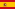
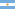

선수단 (SQUAD)
| 번호 |
사진 |
선수 |
출생 (나이) |
포지션 |
국적 |
| 1 |
 |
Iker Casillas (이케르 카시야스) (C) |
1981. 05. 20 (29) |
GK |
 스페인 |
| 2 |
 |
Ricardo Carvalho (히카르두 카르발류) |
1978. 05. 18 (32) |
DF-CB |
 포르투갈 포르투갈 |
| 3 |
 |
Pepe (페페) |
1983. 02. 26 (27) |
DF-CB |
포르투갈 |
| 4 |
 |
Sergio Ramos (세르히오 라모스) |
1986. 03. 30 (24) |
DF-CB |
스페인 |
| 5 |
 |
Fernando Gogo (페르난도 가고) |
1986. 04. 10 (24) |
MF-DM |
 아르헨티나 |
| 6 |
|
Mahamadou Diarra (마하마두 디아라) |
1981. 05. 18 (29) |
MF-DM |
말리 |
| 6 |
|
Emmanuel Adebayor (에마뉘엘 아데바요르) |
1984. 02. 26 (26) |
FW-ST |
토고 |
| 7 |
 |
Cristiano Ronaldo (크리스티아누 호날두) |
1985. 02. 05 (25) |
FW-LW |
포르투갈 |
| 8 |
 |
Kaká (카카) |
1982. 04. 22 (28) |
MF-AM |
 브라질 브라질 |
| 9 |
 |
Karim Benzema (카림 벤제마) |
1987. 12. 19 (22) |
FW-ST |
 프랑스 프랑스 |
| 10 |
 |
Lassana Diarra (라사나 디아라) |
1985. 03. 10 (25) |
MF-DM |
프랑스 |
| 11 |
|
Esteban Granero (에스테반 그라네로) |
1987. 07. 02 (22) |
MF-CM |
스페인 |
| 12 |
 |
Marcelo (마르셀로) |
1988. 05. 12 (22) |
DF-LB |
브라질 |
| 13 |
|
Antonio Adán (안토니오 아단) |
1987. 05. 13 (23) |
GK |
스페인 |
| 14 |
 |
Xabi Alonso (사비 알론소) |
1981. 11. 25 (28) |
MF-DM |
스페인 |
| 15 |
|
David Mateos (데이비드 마테오스) |
1987. 04. 22 (23) |
DF-CB |
스페인 |
| 16 |
|
Sergio Canales (세르히오 카날레스) |
1991. 02. 16 (19) |
MF-AM |
스페인 |
| 17 |
 |
Álvaro Arbeloa (알바로 아르벨로아) |
1983. 01. 17 (27) |
DF-RB |
스페인 |
| 18 |
 |
Raúl Albiol (라울 알비올) |
1985. 09. 04 (24) |
DF-CB |
스페인 |
| 19 |
 |
Ezequiel Garay (에제키엘 가라이) |
1986. 10. 10 (23) |
DF-CB |
아르헨티나 |
| 20 |
 |
Gonzolo Higuain (곤살로 이과인) |
1987. 12. 10 (22) |
FW-ST |
아르헨티나 |
| 21 |
 |
Pedro León (페드로 레온) |
1986. 11. 24 (23) |
FW-RW |
스페인 |
| 22 |
 |
Ángel Di María (앙헬 디 마리아) |
1988. 02. 14 (22) |
FW-RW |
아르헨티나 |
| 23 |
 |
Mesut Özil (메수트 외질) |
1988. 10. 15 (21) |
MF-AM |
 독일 독일 |
| 24 |
|
Sami Khedira (사미 케디라) |
1987. 04. 04 (23) |
MF-CM |
독일 |
| 25 |
 |
Jerzy Dudek (예지 두덱) |
1973. 03. 23 (37) |
GK |
폴란드 |
| 26 |
|
Juankar (후안카르) |
1990. 03. 30 (20) |
DF-LB |
스페인 |
| 27 |
|
Juanfran (후안프란) |
1988. 09. 11 (21) |
DF-RB |
스페인 |
| 28 |
 |
Jesús Fernández (제주스 페르난데스) |
1988. 06. 11 (22) |
GK |
스페인 |
| 29 |
 |
Álvaro Morata (알바로 모라타) |
1992. 10. 23 (17) |
FW-ST |
스페인 |
| 30 |
|
Álex Fernández (알렉스 페르난데스) |
1992. 10. 15 (17) |
MF-AM |
스페인 |
| 32 |
|
Fernando Pacheco (페르난도 파체코) |
1992. 05. 18 (18) |
GK |
스페인 |
| 33 |
|
Pablo Sarabia (파블로 사라비아) |
1992. 05. 11 (18) |
FW-RW |
스페인 |
| 34 |
|
Jorge Casado (호르헤 카사도) |
1989. 06. 26 (21) |
DF-LB |
스페인 |
| 35 |
 |
Nacho Fernández (나초 페르난데스) |
1990. 01. 18 (20) |
DF-CB |
스페인 |
| 38 |
|
Mandi (망디) |
1989. 03. 01 (21) |
MF-CM |
스페인 |
| 39 |
|
Joselu (호셀루) |
1990. 03. 27 (20) |
DF-CM |
스페인 |
| 40 |
|
Tomas Mejias (토마스 메지아스) |
1989. 01. 30 (21) |
GK |
스페인 |

 Home
Home